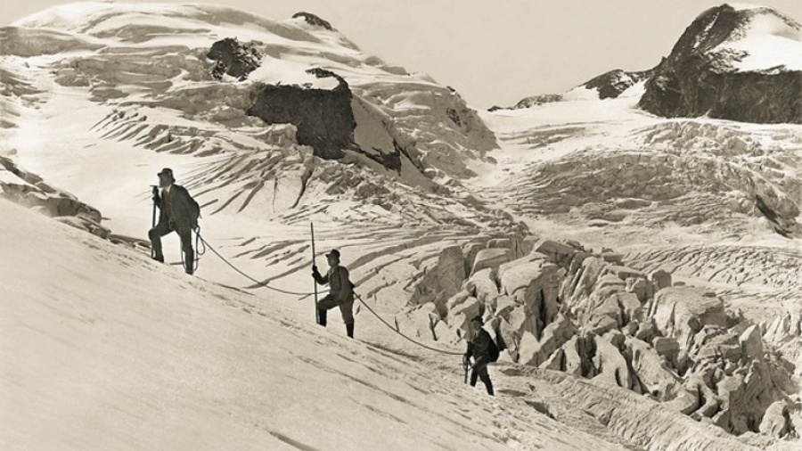
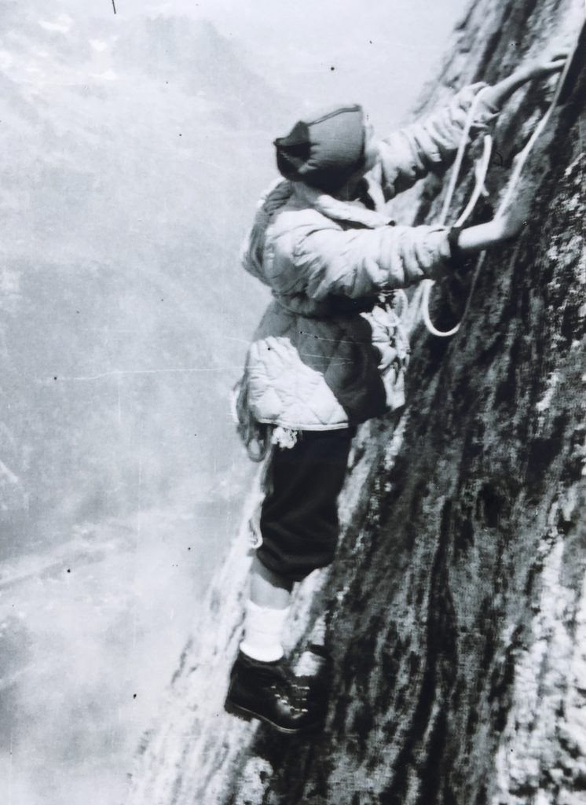
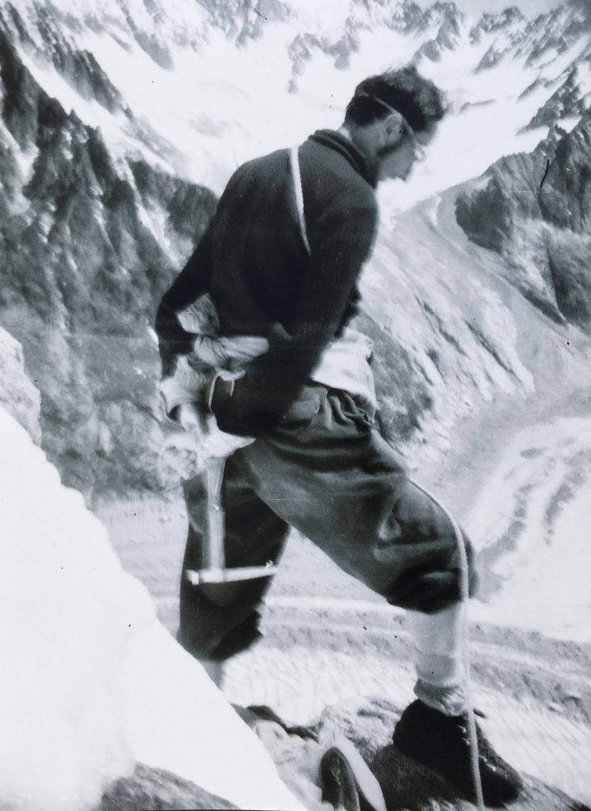
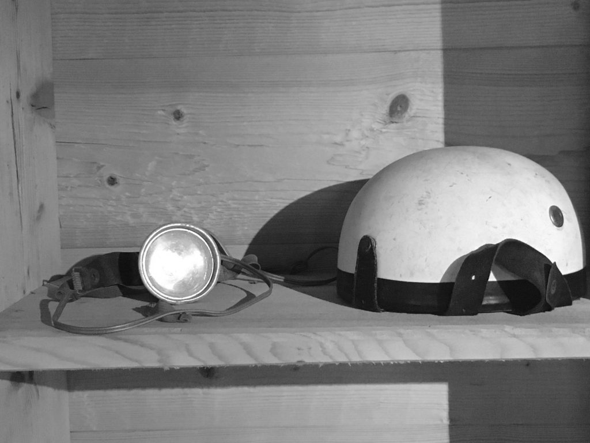
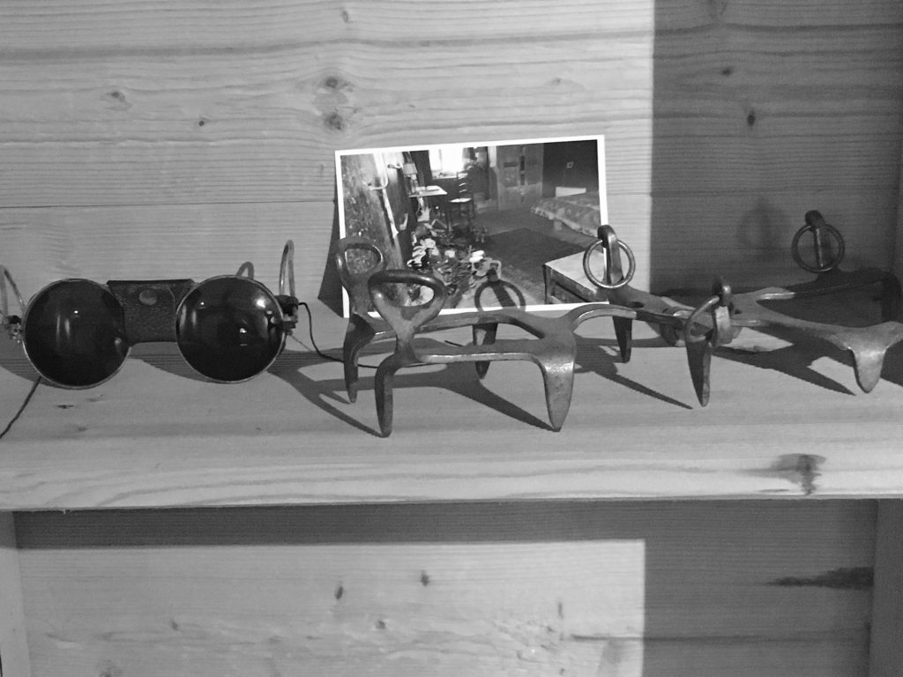

History
- Home
- History
We can find readings about people going up the mountains since the 14th century. But, in the past, mountains were mostly feared and avoided. For centuries, mountains were climbed for a purpose (religion, trade, transportation,…), by chamois hunters and crystal makers (crystal hunter), and places of passage. Quickly (from Antiquity and the romain era) communication routes were created to go from pass to pass. But even though men had been up the mountains for century, alpinism was born in the Alps: The term “alpinism” used in France for example, comes from the name Alpes. And even if we speak about mountaineering in other part of the world, we still use this word!
We can say that mountaineering as a leisure started in 1741 when two English men, William Windham and Richard Pococke, climbed for their pleasure to Montenvers near Chamonix to observe the glacier which will later be called “La Mer de Glace”. They’d talk and write about it and launch the Alpine tourism. In 1786, Jacques Balmat and Michel-Gabriel Paccard were the first to successfully climbed the Mont-Blanc, and Marie Paradis the first woman in 1808.

During the second half of the 19th century, mountaineering became famous with numerous first ascents. Many English adventurers came to the Alps in search of virgin peaks. The decade 1855-1865 is even considered the “golden age of mountaineering”. In 1865, all the important summits of the Alps were climbed, mostly by English alpinists with French, Italian and Swiss guides.
Early 1900s, mountaineers turned to more technical routes. because the “normal routes” to main peaks had been already climbed. The attraction of taking a new and sometimes more difficult route took precedence over the interest of climbing a virgin summit. Mountaineering, which was since then reserved to nobles or rich people is democratizing. From 1870, there were many women climbing the great classic routes. Once again, most came from England.
The profession of guide is also beginning to attract people who are not native from mountain valleys, like the famous Gaston Frison Roche who was also a writer in 1930. But, in parallel, more people decided to climb by themselves, without the help of guides.
Little by little, distant expeditions spread. In 1950, Louis Lachenal and Maurice Herzog made the first ascent of Annapurna. With this success, France won the race for the first 8000. In Himalaya all the 8000 meter summits will be climbed between 1950 and 1964.
In the 70s, the great summits and the great faces in the Alps have already been climbed, but mountaineers will create challenges for themselves by performing a series of extreme routes and the solo will become more frequent.
New activities are developing. Among them ice climbing which will progress enormously, as well as rock climbing and mountain ski. Nowadays, mountaineering is also combined with skiing, paragliding or base jumping.
The high mountains are now much more accessible but remain an area still mostly preserved. However, the Mont-Blanc ascent became so popular that there are some rules now. You need to comply in if you want to make hie ascension.
A snowshoe dating from neolithic era was found in Italy in 2003. It is made of wood and rope and looks so much like the ones used during the 17th century that it had been initially mistook for a snowshoe lost by a farmer much latter.
The basic mountaineering equipment remains the same: specific shoes, ice ax, rope and crampons. But it evolved a lot overtime and since the times my parents were mountaineering.
Do you think it was easier or harder?




Early 1900, the equipment of the mountaineers remains sketchy: hemp rope, shoes with nails and ice ax.
The rope: Peasants used it to cross passes and glaciers as early as the 16th century. However, mountaineers didn’t use rope immediately and, for example, not for the first Mont-Blanc ascents. The rope was then made of hemp, without elasticity, of low resistance and simply passed around the waist. Even if its use saved lives, the rope sometimes broke, throwing the climbers into the emptiness. In the beginning of the 20th century, the use of ropes became a necessity.because mountaineers climbed more difficult and dangereux routes With the pitons and carabiners invention in 1910, the use of rope developed . Nylon replaced hemp in 1947 which made the rope dynamic and more resistant. In 1970, an Englishman developed the harness and it was no longer necessary to tie up the rope at the waist.
Pitons and carabiners: The piton is a metal spike, with an eye or ring in one end, hammered into a crack. A carabiner is a metal loop with a spring-loaded gate used as a connector and to hold a freely running rope. The first pitons came from the ones used by firemen in Munich. In 1939, a French man designed their modern version which is still basically used today even though the performance has been greatly improved over time (especially their weight).
The use of pitons has been controversial since the beginning. In 1932, British climbers took position against the use of hammers, pitons, and carabiners in an article in the the Alpine Journal. The opinion on their use or banishment depend mostly on the type of practice: Climbing as a sport and unique activity or mountaineering. For the latest, climbing is only one of the techniques used to ascent a summit (among hiking and ice and snow techniques). Some climbers in the first category consider that climbing must be done without any gear that could help the progression. This has been pushed to the limits by Paul Preuss who was the first to talk about free climbing as early as 1910. According to Preuss a climber must constantly be in control of his movements and able to climb back down if necessary. Pitons and all other forms of belay equipment must be banned, and the rope is only used to secure the second. He died in 1913, during a solo ascent. Free climbing will develop in 1960-70.
Crampons: They are attached to footwear to improve adherence on ice. The first ones with 10 spikes have been created in 1908. In 1929, 2 spikes have been added and it is still the norm today.
Ice ax: The ice ax is used in several ways in mountaineering: As a walking stick, a solid anchor by burying the pick down, a belay or to stop a fall when buried vertically. The first ice axes appeared late in the history of mountaineering, only in 1840, from the union between a short hatchet and the alpenstock (long stick with an iron tip). An English manufacturer created an ice ax with a metal handle in 1964. The modern ice ax will be improved and perfected over time, With these new tools, it is possible to cross rocky passages covered with thin ice, where it is impossible to dig steps.